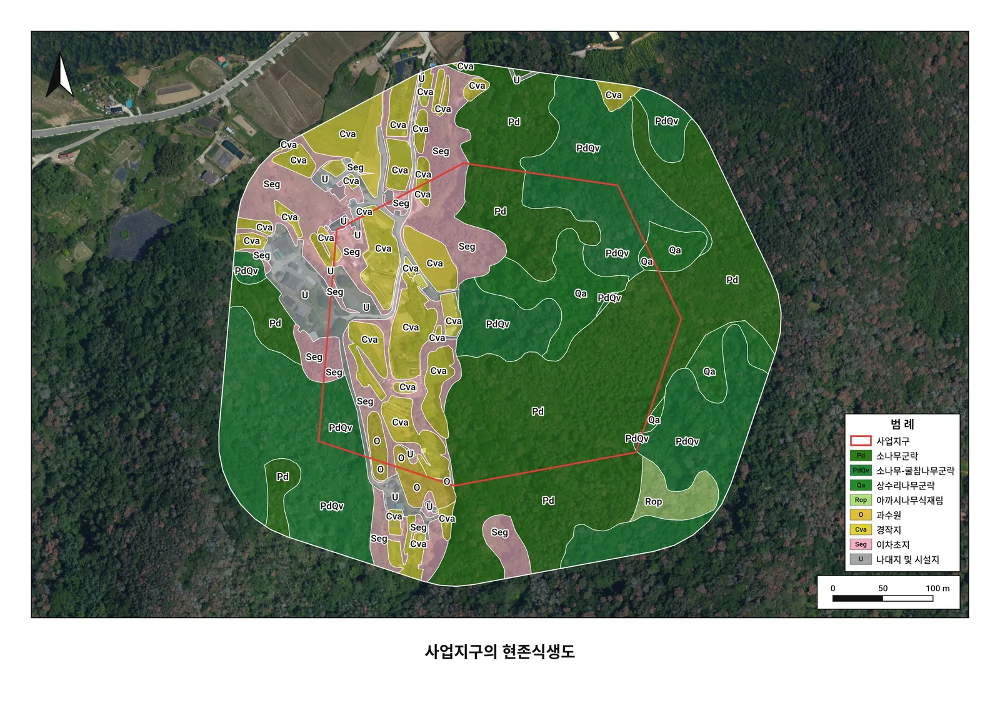
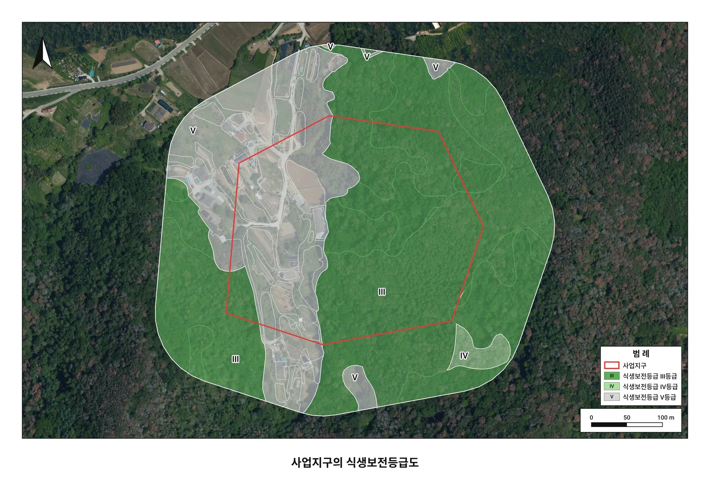

종이 야장
비 오면 번지고 겨울엔 손이 곱고, 돌아와서는 엑셀로 다시 옮겨 적습니다
동식물상·생태계 현장조사 야장 앱
산과 하천에서 경로·지점·식생을 한 번에 남기고
보고서 자료로 바로 내보내는 안드로이드 앱
왜 만들었나
동식물상 조사, 생태계 현장조사를 나가는 사람을 위한 야장 앱입니다. 종이 야장에 적고 돌아와 엑셀로 옮기던 일을 휴대폰 하나로 끝냅니다.
비 오면 번지고 겨울엔 손이 곱고, 돌아와서는 엑셀로 다시 옮겨 적습니다
지점 좌표는 따로 정리하고, 사진은 어디서 찍었는지 한참 들여다봅니다
학명과 법정보호종 여부를 목록에서 하나하나 대조합니다
도로·논밭 경계까지 손으로 따라 긋고, 면적은 GIS에서 따로 냅니다
세 가지 원칙
산속·하천변에서 그대로 씁니다. 지도는 미리 받아 두고 기록은 폰에 쌓입니다. 회원가입도 로그인도 없습니다.
종명은 고르기만 하고, 좌표·사진 위치·이동경로는 저절로 붙습니다.
엑셀·GPX·KML·GeoJSON, 그리고 현존식생도 면적표와 도면 그림으로 바로 나옵니다.
주요 기능
동식물상 현장조사, 생태계 현장조사, 자연생태 조사, 생물종 조사, 생태 모니터링에 씁니다.
조사를 시작하면 걸은 길이 선으로 남고, 확인한 지점이 종명과 함께 지도에 찍힙니다.
국가생물종목록 28,000여 종이 앱 안에 있어 초성만 쳐도 찾습니다. 법정보호종·생태계교란종 표시가 저절로 붙습니다.
정밀·일반·절전 세 가지 조사 모드. 종일·장거리 조사는 절전으로 배터리를 아낍니다.
사업지구 경계(SHP·KML·GeoJSON)와 조사범위 100·300·500m에 겹쳐 봅니다. 한 번 받으면 신호 없는 산에서도 보입니다.
토지피복지도 밑그림 위에 군락 경계만 긋습니다. 면적표·엑셀·도면 그림이 나옵니다.
XLSX·GPX·KML·GeoJSON·PNG·사진 원본 ZIP. GeoJSON은 QGIS에 그대로 올립니다.
화면 예시
현장 기록
현장 기록
현장 기록
| 조사 모드 | 기록 간격 | 쓰는 때 |
|---|---|---|
| 정밀 | 1초 · 2m | 촘촘히 봐야 할 구간 |
| 일반 | 2초 · 3m | 보통 조사 |
| 절전 | 5초 · 10m | 종일·장거리 조사 |
기록 중에는 «생태조사 경로 기록 중» 알림이 떠 있고, 위치 권한은 «앱 사용 중에만 허용»이면 됩니다.
참고 지도
참고 지도
현존식생도
현존식생도
내보내기
| 파일 | 담기는 것 |
|---|---|
| XLSX | 조사목록 · 식생 면적표 |
| GPX · KML | 이동경로 · 기록 지점 |
| GeoJSON | 지점 · 스케치 선 · 군락 면 · 사업지구 경계 · 조사범위 — QGIS에 그대로 |
| PNG | 현존식생도 · 식생보전등급도 |
| ZIP | 사진 원본 |
함께 보기
현존식생도


A4 300dpi 그림 · 바탕은 흰 바탕·위성사진·일반지도 중 선택 · 길면 최대 10장으로 나누고 장마다 키맵
무엇이 달라졌나
사용 방법
설치하기
필요한 기능이나 불편한 점을 알려 주세요. 현장에서 쓰려고 만든 앱이라 계속 쓰면서 고쳐 나갑니다.
cirmax82@gmail.com